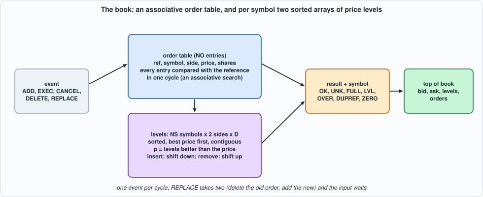
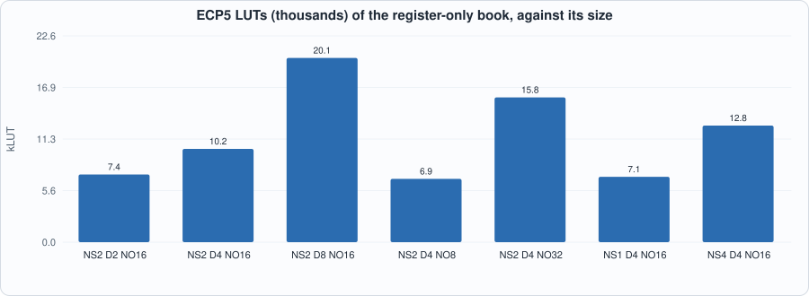
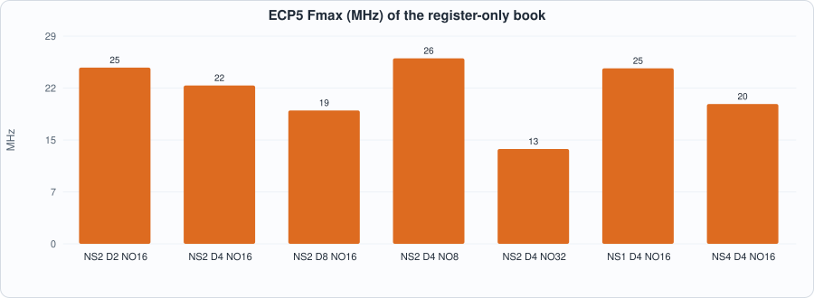
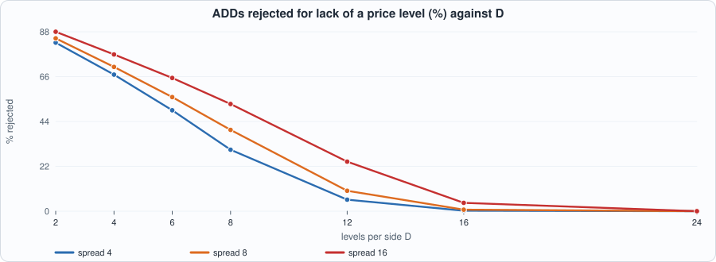
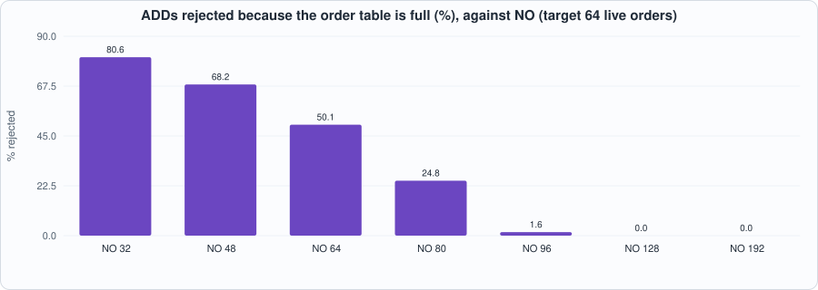

19. The Order Book in Hardware: Orders, Price Levels, Top of Book, and a Design That Is Correct and Too Big¶
About the kestrels in this picture
- Mauritius kestrel (Falco punctatus) lives only on the island of Mauritius. By the mid-1970s only a handful of wild birds were known (the figure usually quoted is four); captive breeding and release programmes brought the population back to hundreds.
- Nankeen kestrel (Falco cenchroides) is found across Australia and nearby islands. It hovers over open country and grassland, and often hunts along roadsides and fields.
The scene is imaginary and the birds are stylised drawings.
What you will see: the message stream of Chapters 16 to 18 builds a book: the resting orders and, for each symbol and side, the shares at each price. The chapter writes the specification first, with dictionaries (what a book is), then the hardware: an order table searched associatively by reference and, for each symbol and side, a sorted array of price levels in registers, updated in one cycle by shifting. Every event reports a result (OK, unknown reference, table full, no free level, over-reduction, duplicate reference, zero shares) and the top of book of its symbol. The RTL equals the model in every cycle, in two simulators, on realistic flow with faults and on uniformly random events; 50 of 50 mutants are caught. And the measurement is a negative one: the all-registers design is 5,000 to 12,000 LUTs for a book of a few dozen orders and two or three price levels per side, does not fit the iCE40 above 16 orders, and runs at 13 to 26 MHz. A sizing study says how large the book needs to be; Chapter 20 is about making it fit.
What you need to know first: Chapter 18 (a window of pending items, a model with its state at the start of the cycle), Chapter 15 (a table in registers, a closed loop with a model) and Chapter 10 (associative search and what it costs).
What this chapter builds: rtl/book.sv (book and the pin wrapper book_syn), model/book_gold.py (the specification, the closed loop and the stimulus), tb/book_tb.sv, tools/ch19_run.py, tools/ch19_example_a.py, tools/ch19_example_b.py, tools/mut_ch19.py, tools/make_figs_ch19.py.
Scope: what this chapter leaves out, on purpose
Everything is registers, with one event per cycle and one cycle's worth of logic; a RAM-based book, worst-case latency against depth and the depth of a real book are Chapter 20. Capacity is fixed: a new price level when all D are in use is rejected (the order is not added), not evicted; a real book keeps the best levels and drops the worst. 32-bit references (ITCH's are 64 bits), prices and shares; the overflow of a level's shares past 2^32 is outside the contract. No matching, no market-by-order timestamps, no cross-book consistency (a bid above the best ask is accepted as it is). Events arrive already parsed: the parser of Chapters 16 and 17 and the arbiter of Chapter 18 are not joined to it. The flow is generated, not captured: the book has no real feed to be measured against.
What a book is¶
model/book_gold.py states it in a few lines of Python with dictionaries: an orders dictionary (reference to symbol, side, price, shares) and, for each symbol and side, a levels dictionary (price to shares). Five events: ADD, EXEC and CANCEL (the same: reduce an order by some shares), DELETE, REPLACE (the old order is deleted and a new one with a new reference, the same symbol and side and a new price and size is added; if the add fails the old order is gone all the same). Two capacities are the only structural facts: the table holds NO orders and each side of each symbol D levels. The checks and their order are written down:
- ADD: ZERO (no shares), DUPREF (the reference exists), FULL (the table is full), LVL (a new level is needed and all
Dare in use); - EXEC, CANCEL: UNK (no such reference), ZERO, OVER (more than the order has); a reduction to zero shares removes the order; a level whose shares reach zero disappears;
- a failed event changes nothing (except the old order of a REPLACE).
After every event the result, the symbol (the order's, or the input's for an ADD, or 0 for an unknown reference) and the top of book of that symbol are reported: best bid and ask (price, shares), the number of levels on each side, the number of orders in the table. One event is accepted per cycle; a REPLACE takes two, and the input waits during the second.
#!/usr/bin/env python3
"""Chapter 19: the specification of the order book, written with dictionaries and nothing else (no sorted array, no table of slots): it is what a book IS, so that the hardware's structures are tested against it. Cycle accounting at the end.
Events (ITCH-like, with 32-bit order references): ADD(ref, sym, side, px, sh), EXEC(ref, sh) and CANCEL(ref, sh) (reduce the order by sh), DELETE(ref), REPLACE(ref, ref2, px, sh) (the old order is deleted, a new order with reference ref2 and the same symbol and side is added; if the add fails the old order is gone all the same). side 0 = bid, 1 = ask.
Capacity (the only structural facts): the order table holds NO orders; each side of each symbol holds D price levels. Results: 0 OK; 1 UNK (reference not found); 2 FULL (order table full); 3 LVL (a new price level is needed and all D are in use); 4 OVER (reduce by more than the order has); 5 DUPREF (ADD or REPLACE with a reference that exists); 6 ZERO (zero shares). Checks are made in this order: ADD: ZERO, DUPREF, FULL, LVL; REDUCE: UNK, ZERO, OVER. A reduction that leaves 0 shares removes the order; a level whose shares reach 0 disappears. A failed event changes nothing (except the old order of a REPLACE, above).
After every event the result is reported with the symbol (the order's, or the input's for ADD, or 0 if the reference was not found) and the TOP OF BOOK of that symbol: best bid (price, shares), best ask (price, shares), the number of levels on each side and the number of orders in the table. Prices and shares are 32-bit; overflow of a level's shares (2^32) is outside the contract.
Cycles: one event per cycle, except that REPLACE takes two (delete the old order, then add the new): while the second runs, the input is not accepted. The result of an event is visible the cycle after its last phase."""
import random
M = 0xFFFFFFFF
ADD, EXEC, CANCEL, DELETE, REPLACE = range(5)
TN = ["ADD", "EXEC", "CANCEL", "DELETE", "REPLACE"]
OK, UNK, FULL, LVL, OVER, DUPREF, ZERO = range(7)
RN = ["OK", "UNK", "FULL", "LVL", "OVER", "DUPREF", "ZERO"]
class Book:
def __init__(self, ns=2, d=4, no=8):
self.ns, self.d, self.no = ns, d, no; self.orders = {}; self.lv = [[{}, {}] for _ in range(ns)]
def top(self, sym):
b, a = self.lv[sym]; bp = max(b) if b else 0; ap = min(a) if a else 0
return (bp, b.get(bp, 0), ap, a.get(ap, 0), len(b), len(a), len(self.orders))
def _add(self, ref, sym, side, px, sh):
if sh == 0: return ZERO
if ref in self.orders: return DUPREF
if len(self.orders) >= self.no: return FULL
L = self.lv[sym][side]
if px not in L and len(L) >= self.d: return LVL
self.orders[ref] = [sym, side, px, sh]; L[px] = (L.get(px, 0) + sh) & M; return OK
def _reduce(self, ref, sh):
if ref not in self.orders: return UNK, 0
sym, side, px, osh = self.orders[ref]
if sh == 0: return ZERO, sym
if sh > osh: return OVER, sym
self._take(ref, sh); return OK, sym
def _take(self, ref, sh):
sym, side, px, osh = self.orders[ref]; L = self.lv[sym][side]; L[px] = (L[px] - sh) & M
if L[px] == 0: del L[px]
if sh == osh: del self.orders[ref]
else: self.orders[ref][3] = osh - sh
def event(self, e):
"""-> (phases, result, sym). e: dict(t, ref, ref2, sym, side, px, sh)."""
t = e["t"]; ref = e["ref"] & M
if t == ADD: r = self._add(ref, e["sym"], e["side"], e["px"] & M, e["sh"] & M); return 1, r, e["sym"]
if t in (EXEC, CANCEL): r, s = self._reduce(ref, e["sh"] & M); return 1, r, s
if t == DELETE:
if ref not in self.orders: return 1, UNK, 0
s = self.orders[ref][0]; self._take(ref, self.orders[ref][3]); return 1, OK, s
if ref not in self.orders: return 1, UNK, 0 # REPLACE
sym, side, _, osh = self.orders[ref]; self._take(ref, osh); r = self._add(e["ref2"] & M, sym, side, e["px"] & M, e["sh"] & M); return 2, r, sym
def run(events, ns=2, d=4, no=8, gaps=None, split=False):
"""Closed loop: the events arrive in order, the i-th no earlier than cycle sum(gaps[:i + 1]); one is offered per cycle (the oldest not yet accepted) and accepted when the engine is idle. -> dict(rows, lines). rows[c] = (ready, result visible this cycle or None) with result = (res, sym, top...)."""
b = Book(ns, d, no); n = len(events); arr = []; t = 0
for i in range(n): t += (gaps[i] if gaps else 0); arr.append(t)
qi = 0; t = 0; busy_until = 0; pend = None; rows = []; lines = []; per = 2 if split else 1
while qi < n or pend or t < busy_until + 2:
offered = events[qi] if qi < n and arr[qi] <= t else None
ready = t >= busy_until; res_now = pend[0] if pend and pend[1] == t else None
if res_now is not None: res_now = (res_now[1], res_now[2]) + b_top(pend[2], res_now[2])
rows.append((1 if ready else 0, res_now)); lines.append(offered)
if pend and pend[1] == t: pend = None
if offered is not None and ready:
ph, r, s = b.event(offered); ph *= per; busy_until = t + ph; pend = ((None, r, s), t + ph, b.top(s)); qi += 1
t += 1
if t > 10 * (n + 4) * (2 + 2 * per) + sum(gaps or [0]) + 100: break
return dict(rows=rows, lines=lines, book=b, cycles=t)
def b_top(top, sym): return top
def write_stim(path, lines, seed=1):
rng = random.Random(seed)
with open(path, "w") as f:
for e in lines:
if e: f.write("%x%x%x%x%08x%08x%08x%08x\n" % (1, e["t"], e.get("sym", 0), e.get("side", 0), e.get("ref", 0) & M, e.get("ref2", 0) & M, e.get("px", 0) & M, e.get("sh", 0) & M))
else: f.write("%x%x%x%x%08x%08x%08x%08x\n" % (0, rng.randrange(8), rng.randrange(2), rng.randrange(2), rng.getrandbits(32), rng.getrandbits(32), rng.getrandbits(32), rng.getrandbits(32)))
return len(lines)
def expected_rows(res):
"""(cycle, ready, rv, result, sym, bpx, bsh, apx, ash, bn, an, nord) as the testbench prints them."""
out = []
for c, (ready, r) in enumerate(res["rows"]):
if r is None: out.append((c, ready, 0, 0, 0, 0, 0, 0, 0, 0, 0, 0))
else: out.append((c, ready, 1, r[0], r[1]) + tuple(r[2:]))
return out
def gen_events(rng, n, ns=2, d=4, no=8, mid=1000, spread=6, faults=0.08, sh_max=300, p_add=0.40, p_red=0.20, p_del=0.18):
"""Realistic flow with faults: the oracle book runs alongside so that EXEC/CANCEL/DELETE/REPLACE mostly name live orders, with partial and full reductions; faults (unknown and duplicate references, over-reductions, zero shares) at probability `faults`; prices within `spread` ticks of a drifting mid so that levels fill and empty."""
book = Book(ns, d, no); out = []; nxt = 1
for _ in range(n):
live = list(book.orders); r = rng.random(); mid += rng.choice([0, 0, 0, 1, -1])
def px(side): return mid + (rng.randint(0, spread) if side else -rng.randint(0, spread))
if not live or r < p_add:
side = rng.randrange(2); e = dict(t=ADD, ref=nxt, sym=rng.randrange(ns), side=side, px=px(side), sh=rng.randint(1, sh_max)); nxt += 1
if rng.random() < faults / 2: e["ref"] = rng.choice(live) if live else 99999
if rng.random() < faults / 2: e["sh"] = 0
else:
ref = rng.choice(live); o = book.orders[ref]
if r < p_add + p_red: e = dict(t=rng.choice([EXEC, CANCEL]), ref=ref, sh=rng.randint(1, o[3]) if rng.random() < .6 else rng.randint(1, max(1, o[3] - 1)))
elif r < p_add + p_red + p_del: e = dict(t=DELETE, ref=ref)
else: e = dict(t=REPLACE, ref=ref, ref2=nxt, px=px(o[1]), sh=rng.randint(1, sh_max)); nxt += 1
if rng.random() < faults / 2: e["ref"] = 777777 + rng.randrange(5)
elif rng.random() < faults and e["t"] in (EXEC, CANCEL): e["sh"] = o[3] + rng.randint(1, 5)
elif rng.random() < faults / 2 and e["t"] in (EXEC, CANCEL): e["sh"] = 0
elif rng.random() < faults / 2 and e["t"] == REPLACE and len(live) > 1: e["ref2"] = rng.choice(live)
out.append(e); book.event(e)
return out
if __name__ == "__main__":
b = Book(2, 2, 3)
assert b.event(dict(t=ADD, ref=1, sym=0, side=0, px=100, sh=50)) == (1, OK, 0) and b.top(0) == (100, 50, 0, 0, 1, 0, 1)
assert b.event(dict(t=ADD, ref=2, sym=0, side=0, px=100, sh=25))[1] == OK and b.top(0)[:2] == (100, 75) # a second order at the same price: one level
assert b.event(dict(t=ADD, ref=3, sym=0, side=0, px=101, sh=10))[1] == OK and b.top(0)[:2] == (101, 10) and b.top(0)[4] == 2 # a better bid becomes the top
assert b.event(dict(t=ADD, ref=4, sym=0, side=0, px=99, sh=10))[1] == FULL # the table holds 3 orders
assert b.event(dict(t=EXEC, ref=3, sh=10)) == (1, OK, 0) and b.top(0)[:2] == (100, 75) # the level empties and goes
assert b.event(dict(t=CANCEL, ref=1, sh=51))[1] == OVER and b.event(dict(t=CANCEL, ref=1, sh=0))[1] == ZERO and b.event(dict(t=CANCEL, ref=9, sh=1))[1] == UNK
assert b.event(dict(t=ADD, ref=2, sym=0, side=1, px=105, sh=5))[1] == DUPREF
assert b.event(dict(t=REPLACE, ref=1, ref2=5, px=98, sh=40)) == (2, OK, 0) and b.top(0)[:2] == (100, 25) and b.top(0)[4] == 2 # replace: new price, new reference
assert b.event(dict(t=ADD, ref=6, sym=1, side=1, px=7, sh=1))[1] == OK and b.top(1) == (0, 0, 7, 1, 0, 1, 3) and b.event(dict(t=ADD, ref=7, sym=1, side=1, px=8, sh=1))[1] == FULL # a second symbol; the table is shared
c = Book(1, 1, 8); c.event(dict(t=ADD, ref=1, sym=0, side=0, px=10, sh=5)); assert c.event(dict(t=ADD, ref=2, sym=0, side=0, px=11, sh=5))[1] == LVL and c.event(dict(t=ADD, ref=2, sym=0, side=1, px=11, sh=5))[1] == OK # a full side does not stop the other
f = Book(2, 2, 2); f.event(dict(t=ADD, ref=1, sym=1, side=0, px=5, sh=1)); f.event(dict(t=ADD, ref=2, sym=1, side=0, px=6, sh=1))
assert f.event(dict(t=ADD, ref=2, sym=1, side=1, px=7, sh=1))[1] == DUPREF and f.event(dict(t=ADD, ref=3, sym=1, side=1, px=7, sh=1))[1] == FULL # a duplicate is found before the table is found full
assert f.event(dict(t=REPLACE, ref=99, ref2=5, px=1, sh=1)) == (1, UNK, 0) and f.event(dict(t=DELETE, ref=99)) == (1, UNK, 0) and f.event(dict(t=DELETE, ref=2)) == (1, OK, 1) # unknown references report symbol 0
r = run([dict(t=ADD, ref=1, sym=0, side=0, px=5, sh=1), dict(t=REPLACE, ref=1, ref2=2, px=6, sh=1), dict(t=ADD, ref=3, sym=0, side=1, px=9, sh=1)], 1, 4, 8)
assert [x[0] for x in r["rows"][:5]] == [1, 1, 0, 1, 1] and r["rows"][1][1] is not None and r["rows"][3][1] is not None # the replace keeps the engine busy for the next cycle; results one cycle after the last phase
print("book_gold hand-checked scenarios passed")
The hardware¶
The order table is NO registers, each with a valid bit, the reference, symbol, side, price and shares; a lookup compares every entry with the reference in one cycle (an associative search: a comparator per entry). For each symbol and side the levels are D entries (valid, price, shares) kept sorted, best price first, with the valid ones contiguous from index 0: the position p of a price is the number of levels that are better than it (parallel comparators and a count), a level at position p with an equal price is a hit; a new level is inserted by shifting the worse ones down, an emptied one removed by shifting the worse ones up, each in the one cycle. The top of book is level 0 of each side.

Figure 19.1: the order table and the sorted levels.// verilator lint_off DECLFILENAME
// Chapter 19: the order book. Behaviour, results and every simplification are those of model/book_gold.py, cycle for cycle.
// NS symbols, each with a bid side and an ask side of D price levels kept SORTED (best price first, the valid levels contiguous from index 0, in registers: a new level is inserted by shifting the worse ones down, an emptied level removed by shifting them up: one cycle each). An order table of NO orders (reference, symbol, side, price, shares) searched ASSOCIATIVELY (every entry compared with the reference in one cycle). One event per cycle; REPLACE takes two (delete, then add) and in_ready is 0 during the second. The result (res, sym) is registered; the top of book of that symbol is read from the level registers in the cycle the result is visible.
// event types: 0 ADD (ref, sym, side, px, sh), 1 EXEC (ref, sh), 2 CANCEL (ref, sh), 3 DELETE (ref), 4 REPLACE (ref = old, ref2 = new, px, sh). Results: 0 OK, 1 UNK, 2 FULL, 3 LVL, 4 OVER, 5 DUPREF, 6 ZERO.
module book #(parameter int NS = 2, parameter int D = 4, parameter int NO = 8) (
input logic clk, input logic rst,
input logic in_valid, input logic [2:0] in_type, input logic [31:0] in_ref, input logic [31:0] in_ref2, input logic [SW-1:0] in_sym, input logic in_side, input logic [31:0] in_px, input logic [31:0] in_sh, output logic in_ready,
output logic o_valid, output logic [2:0] o_res, output logic [SW-1:0] o_sym,
output logic [31:0] o_bpx, output logic [31:0] o_bsh, output logic [31:0] o_apx, output logic [31:0] o_ash, output logic [7:0] o_bn, output logic [7:0] o_an, output logic [7:0] o_nord);
localparam int SW = (NS > 1) ? $clog2(NS) : 1;
localparam int OW = (NO > 1) ? $clog2(NO) : 1;
localparam int DW = (D > 1) ? $clog2(D + 1) : 1;
// state
logic ov [NO]; logic [31:0] oref [NO]; logic [SW-1:0] osym [NO]; logic osd [NO]; logic [31:0] opx [NO]; logic [31:0] osh [NO];
logic lv [NS * 2][D]; logic [31:0] lpx [NS * 2][D]; logic [31:0] lsh [NS * 2][D];
logic busy; logic [31:0] b_ref, b_px, b_sh; logic [SW-1:0] b_sym; logic b_side;
// the operation of this cycle
logic is_add, is_red, is_del, is_rep, accept; logic [31:0] a_ref, a_px, a_sh; logic [SW-1:0] a_sym; logic a_side;
logic dup, free_any, found; logic [OW-1:0] free_idx, f_idx; logic [31:0] f_px, f_sh; logic [SW-1:0] f_sym; logic f_side;
logic [31:0] tk; logic [2:0] res; logic [SW-1:0] rsym; logic res_v;
logic lop, lop_add; logic [SW:0] lop_li; logic [31:0] lop_px, lop_sh; logic [DW-1:0] p, cnt; logic hit, lfull; logic [31:0] hit_sh; logic remove_lv; logic ord_free, ord_set, ord_red; logic rep_go;
always_comb begin
accept = in_valid && !busy; in_ready = !busy;
is_add = busy || (accept && in_type == 3'd0); is_red = accept && (in_type == 3'd1 || in_type == 3'd2); is_del = accept && in_type == 3'd3; is_rep = accept && in_type == 3'd4;
a_ref = busy ? b_ref : in_ref; a_px = busy ? b_px : in_px; a_sh = busy ? b_sh : in_sh; a_sym = busy ? b_sym : in_sym; a_side = busy ? b_side : in_side;
// the order table: look up the reference of the event (for ADD: the new one, for a duplicate)
dup = 1'b0; free_any = 1'b0; free_idx = '0; found = 1'b0; f_idx = '0; f_px = 32'd0; f_sh = 32'd0; f_sym = '0; f_side = 1'b0;
for (int i = NO - 1; i >= 0; i--) begin
if (ov[i] && oref[i] == a_ref) dup = 1'b1;
if (!ov[i]) begin free_any = 1'b1; free_idx = OW'(i); end
if (ov[i] && oref[i] == in_ref) begin found = 1'b1; f_idx = OW'(i); f_px = opx[i]; f_sh = osh[i]; f_sym = osym[i]; f_side = osd[i]; end
end
tk = (is_del || is_rep) ? f_sh : in_sh;
// which level operation (if any), and the checks
lop = 1'b0; lop_add = 1'b0; lop_li = '0; lop_px = 32'd0; lop_sh = 32'd0; res = 3'd0; rsym = '0; res_v = 1'b0; ord_free = 1'b0; ord_set = 1'b0; ord_red = 1'b0; rep_go = 1'b0;
// the level search for the symbol and side the operation names (add: the new order's; reduce: the found order's)
if (is_add) begin lop_li = {a_sym, a_side}; lop_px = a_px; lop_sh = a_sh; end
else begin lop_li = {f_sym, f_side}; lop_px = f_px; lop_sh = tk; end
p = '0; cnt = '0; hit = 1'b0; hit_sh = 32'd0;
for (int i = 0; i < D; i++) begin
if (lv[lop_li][i]) begin
cnt = cnt + 1'b1;
if (lop_li[0] ? (lpx[lop_li][i] < lop_px) : (lpx[lop_li][i] > lop_px)) p = p + 1'b1; // better than the price: the level sits ahead of it
end
end
for (int i = 0; i < D; i++) if (lv[lop_li][i] && DW'(i) == p && lpx[lop_li][i] == lop_px) begin hit = 1'b1; hit_sh = lsh[lop_li][i]; end
lfull = !hit && (cnt == DW'(D));
remove_lv = 1'b0;
if (is_add) begin
res_v = 1'b1; rsym = a_sym;
if (a_sh == 32'd0) res = 3'd6; else if (dup) res = 3'd5; else if (!free_any) res = 3'd2; else if (lfull) res = 3'd3; else begin res = 3'd0; lop = 1'b1; lop_add = 1'b1; ord_set = 1'b1; end
end else if (is_red || is_del) begin
res_v = 1'b1; rsym = found ? f_sym : '0;
if (!found) res = 3'd1;
else if (is_red && in_sh == 32'd0) res = 3'd6;
else if (is_red && in_sh > f_sh) res = 3'd4;
else begin res = 3'd0; lop = 1'b1; remove_lv = ((hit_sh - tk) == 32'd0); if (tk == f_sh) ord_free = 1'b1; else ord_red = 1'b1; end
end else if (is_rep) begin
if (!found) begin res_v = 1'b1; res = 3'd1; rsym = '0; end
else begin rep_go = 1'b1; lop = 1'b1; remove_lv = ((hit_sh - tk) == 32'd0); ord_free = 1'b1; end
end
end
// the result, the engine and the order table
always_ff @(posedge clk) begin
o_valid <= 1'b0;
if (rst) begin
busy <= 1'b0; for (int i = 0; i < NO; i++) ov[i] <= 1'b0; for (int s = 0; s < NS * 2; s++) for (int i = 0; i < D; i++) lv[s][i] <= 1'b0;
end else begin
if (res_v) begin o_valid <= 1'b1; o_res <= res; o_sym <= rsym; end
if (busy) busy <= 1'b0;
if (rep_go) begin busy <= 1'b1; b_ref <= in_ref2; b_px <= in_px; b_sh <= in_sh; b_sym <= f_sym; b_side <= f_side; end
if (ord_set) begin ov[free_idx] <= 1'b1; oref[free_idx] <= a_ref; osym[free_idx] <= a_sym; osd[free_idx] <= a_side; opx[free_idx] <= a_px; osh[free_idx] <= a_sh; end
if (ord_free) ov[f_idx] <= 1'b0;
if (ord_red) osh[f_idx] <= f_sh - tk;
// the levels
if (lop) for (int s = 0; s < NS * 2; s++) if ((SW + 1)'(s) == lop_li) begin
if (lop_add && hit) begin for (int i = 0; i < D; i++) if (DW'(i) == p) lsh[s][i] <= lsh[s][i] + lop_sh; end
else if (lop_add) begin
for (int i = D - 1; i >= 0; i--) begin
if (DW'(i) == p) begin lv[s][i] <= 1'b1; lpx[s][i] <= lop_px; lsh[s][i] <= lop_sh; end
else if (DW'(i) > p && i > 0) begin lv[s][i] <= lv[s][i - 1]; lpx[s][i] <= lpx[s][i - 1]; lsh[s][i] <= lsh[s][i - 1]; end
end
end else if (remove_lv) begin
for (int i = 0; i < D; i++) begin
if (DW'(i) >= p) begin
if (i + 1 < D) begin lv[s][i] <= lv[s][i + 1]; lpx[s][i] <= lpx[s][i + 1]; lsh[s][i] <= lsh[s][i + 1]; end else lv[s][i] <= 1'b0;
end
end
end else begin for (int i = 0; i < D; i++) if (DW'(i) == p) lsh[s][i] <= lsh[s][i] - lop_sh; end
end
end
end
// the top of book of the symbol of the result (read in the cycle the result is visible)
logic [7:0] nb, na, no_;
always_comb begin
o_bpx = lv[{o_sym, 1'b0}][0] ? lpx[{o_sym, 1'b0}][0] : 32'd0; o_bsh = lv[{o_sym, 1'b0}][0] ? lsh[{o_sym, 1'b0}][0] : 32'd0;
o_apx = lv[{o_sym, 1'b1}][0] ? lpx[{o_sym, 1'b1}][0] : 32'd0; o_ash = lv[{o_sym, 1'b1}][0] ? lsh[{o_sym, 1'b1}][0] : 32'd0;
nb = 8'd0; na = 8'd0; no_ = 8'd0;
for (int i = 0; i < D; i++) begin if (lv[{o_sym, 1'b0}][i]) nb = nb + 8'd1; if (lv[{o_sym, 1'b1}][i]) na = na + 8'd1; end
for (int i = 0; i < NO; i++) if (ov[i]) no_ = no_ + 8'd1;
o_bn = nb; o_an = na; o_nord = no_;
end
endmodule
// book_syn: the same design behind a handful of pins, ONLY so that it fits a chip for the place-and-route runs: the event (140 bits) is shifted in serially, the outputs are registered and folded into one 16-bit word.
module book_syn #(parameter int NS = 2, parameter int D = 4, parameter int NO = 8) (input logic clk, input logic rst, input logic si, input logic sh, output logic [15:0] info);
localparam int SW = (NS > 1) ? $clog2(NS) : 1;
logic [139:0] iv; logic ready, ov_; logic [2:0] res; logic [SW-1:0] sy; logic [31:0] bpx, bsh, apx, ash; logic [7:0] bn, an, nord;
always_ff @(posedge clk) if (sh) iv <= {iv[138:0], si};
book #(.NS(NS), .D(D), .NO(NO)) u (.clk(clk), .rst(rst), .in_valid(iv[139]), .in_type(iv[138:136]), .in_ref(iv[135:104]), .in_ref2(iv[103:72]), .in_sym(iv[71:71-SW+1]), .in_side(iv[0]), .in_px(iv[71:40]), .in_sh(iv[39:8]), .in_ready(ready),
.o_valid(ov_), .o_res(res), .o_sym(sy), .o_bpx(bpx), .o_bsh(bsh), .o_apx(apx), .o_ash(ash), .o_bn(bn), .o_an(an), .o_nord(nord));
logic [15:0] x, r1; always_comb x = bpx[15:0] ^ bpx[31:16] ^ bsh[15:0] ^ bsh[31:16] ^ apx[15:0] ^ apx[31:16] ^ ash[15:0] ^ ash[31:16] ^ {bn, an} ^ {nord, ov_, ready, res, 3'(sy)};
always_ff @(posedge clk) begin r1 <= x; info <= r1; end
endmodule
The tests¶
// Chapter 19 testbench for book: line k of out/book_stim.hex is the event OFFERED in cycle k: valid(1) type(1) sym(1) side(1) ref(8) ref2(8) px(8) sh(8) hex digits (junk where valid = 0); the offer is held on the pins whether or not the engine is ready: model/book_gold.py run() decides which cycle's offer is accepted. Before every clock edge it prints
// C <cycle> <in_ready> <o_valid> <result> <symbol> <best bid px> <bid sh> <best ask px> <ask sh> <bid levels> <ask levels> <orders>
// (zeros when o_valid = 0): the result registered at the previous edge and the top of book of its symbol read from the level registers now.
`timescale 1ns/1ps
`ifndef NC
`define NC 1000
`endif
`ifndef NS
`define NS 2
`endif
`ifndef D
`define D 4
`endif
`ifndef NO
`define NO 8
`endif
module book_tb;
localparam int NC = `NC, SW = (`NS > 1) ? $clog2(`NS) : 1;
logic clk = 0, rst = 1, in_valid = 0, in_side = 0; logic [2:0] in_type = '0; logic [31:0] in_ref = '0, in_ref2 = '0, in_px = '0, in_sh = '0; logic [SW-1:0] in_sym = '0; logic [143:0] vec [0:NC-1]; int k, cyc = 0; logic run = 0;
logic in_ready, o_valid; logic [2:0] o_res; logic [SW-1:0] o_sym; logic [31:0] o_bpx, o_bsh, o_apx, o_ash; logic [7:0] o_bn, o_an, o_nord;
book #(.NS(`NS), .D(`D), .NO(`NO)) dut (.clk(clk), .rst(rst), .in_valid(in_valid), .in_type(in_type), .in_ref(in_ref), .in_ref2(in_ref2), .in_sym(in_sym), .in_side(in_side), .in_px(in_px), .in_sh(in_sh), .in_ready(in_ready),
.o_valid(o_valid), .o_res(o_res), .o_sym(o_sym), .o_bpx(o_bpx), .o_bsh(o_bsh), .o_apx(o_apx), .o_ash(o_ash), .o_bn(o_bn), .o_an(o_an), .o_nord(o_nord));
always #4 clk = ~clk;
`ifdef GARBAGE
initial begin dut.busy = 1'b1; for (int i = 0; i < `NO; i++) begin dut.ov[i] = 1'b1; dut.oref[i] = 32'(i + 1); dut.osh[i] = 32'd5; end for (int s = 0; s < `NS * 2; s++) for (int i = 0; i < `D; i++) begin dut.lv[s][i] = 1'b1; dut.lpx[s][i] = 32'd77; dut.lsh[s][i] = 32'd3; end end // Icarus only: the registers power up with garbage, so that a reset that forgets one is seen
`endif
always @(posedge clk) if (run) begin
$display("C %0d %0d %0d %0d %0d %0d %0d %0d %0d %0d %0d %0d", cyc, in_ready, o_valid, o_valid ? o_res : 3'd0, o_valid ? o_sym : '0, o_valid ? o_bpx : 32'd0, o_valid ? o_bsh : 32'd0, o_valid ? o_apx : 32'd0, o_valid ? o_ash : 32'd0, o_valid ? o_bn : 8'd0, o_valid ? o_an : 8'd0, o_valid ? o_nord : 8'd0);
cyc++;
end
initial begin
$readmemh("out/book_stim.hex", vec);
repeat (3) @(negedge clk); rst = 0;
for (k = 0; k < NC; k++) begin
in_valid = vec[k][140]; in_type = vec[k][138:136]; in_sym = vec[k][132 +: SW]; in_side = vec[k][128]; in_ref = vec[k][127:96]; in_ref2 = vec[k][95:64]; in_px = vec[k][63:32]; in_sh = vec[k][31:0]; run = 1; @(negedge clk);
end
in_valid = 0; repeat (3) @(negedge clk); $finish;
end
endmodule
#!/usr/bin/env python3
"""Chapter 19: the running designs. (1) lint; (2) the model: hand-checked scenarios and the statistics of the stimulus; (3) the book against the cycle model, every result, the top of book of its symbol and the readiness of the engine in every cycle, in two simulators, for five sizes (symbols, levels, orders), on realistic flow with faults and on RANDOM events (which reach the cases the realistic flow does not)."""
import os, random, subprocess, sys
from collections import Counter
sys.path.insert(0, os.path.dirname(os.path.abspath(__file__))); sys.path.insert(0, os.path.join(os.path.dirname(os.path.abspath(__file__)), "..", "model"))
import flow, book_gold as G
R = flow.ROOT; F = ["rtl/book.sv", "tb/book_tb.sv"]
def rows_rtl(res, ns, d, no, simu="icarus", rtl=F):
n = G.write_stim(os.path.join(R, "out", "book_stim.hex"), res["lines"])
o = (flow.sim_icarus if simu == "icarus" else flow.sim_verilator)(rtl, "book_tb", defines=(f"NC={n}", f"NS={ns}", f"D={d}", f"NO={no}") + (("GARBAGE",) if simu == "icarus" else ()))[1]
try: return [tuple(int(x) for x in l.split()[1:]) for l in o.splitlines() if l.startswith("C ")]
except ValueError: return [("x",)]
def same(res, ns, d, no, simu="icarus", rtl=F):
got = rows_rtl(res, ns, d, no, simu, rtl); exp = G.expected_rows(res); return got[:len(exp)] == exp and len(got) >= len(exp)
def random_events(rng, n, ns, d, no):
"""Uniformly random events over a small space of references, symbols and prices: unknown and duplicate references, all the results, full tables and levels, every phase."""
out = []
for _ in range(n):
t = rng.randrange(5); e = dict(t=t, ref=rng.randint(1, no + 3), ref2=rng.randint(1, no + 3), sym=rng.randrange(ns), side=rng.randrange(2), px=rng.randint(1, d + 3), sh=rng.choice([0, 1, 2, 5, 10, 0xFFFFFFFF]) if rng.random() < .1 else rng.randint(1, 8))
out.append(e)
return out
CONFIGS = [(2, 4, 8), (1, 2, 4), (3, 3, 6), (4, 8, 16), (2, 1, 3)]
def make(kind, seed, n, ns, d, no):
rng = random.Random(seed)
ev = G.gen_events(rng, n, ns, d, no, spread=d + 1, faults=0.1) if kind == "flow" else random_events(rng, n, ns, d, no)
return G.run(ev, ns, d, no, gaps=[rng.choice([0, 0, 0, 1, 4]) for _ in ev]), ev
def battery():
"""The mutation runs' test: five sizes, flow with faults and random events, Icarus. -> None or the first difference."""
for ci, (ns, d, no) in enumerate(CONFIGS):
for kind in ("flow", "random"):
for seed in range(2):
try: res, _ = make(kind, seed + ci, 150, ns, d, no); ok = same(res, ns, d, no)
except Exception as x: return f"crash {type(x).__name__}"
if not ok: return f"{kind}, NS {ns}, D {d}, NO {no}"
return None
def battery_model():
"""The model's own test: its hand-checked scenarios. -> None or a description."""
q = subprocess.run([sys.executable, "model/book_gold.py"], cwd=R, capture_output=True, text=True, timeout=300)
return None if q.returncode == 0 else "hand-checked scenarios"
if __name__ == "__main__":
if "--battery-model" in sys.argv: print("RESULT", battery_model()); sys.exit(0)
if "--battery" in sys.argv: print("RESULT", battery()); sys.exit(0)
print("== 1. lint gate (Verilator -Wall --lint-only, Yosys 'check')")
p = subprocess.run(["verilator", "--lint-only", "-Wall", "--top-module", "book", "rtl/book.sv"], cwd=R, capture_output=True, text=True); w = [l for l in (p.stdout + p.stderr).splitlines() if l.startswith("%Warning") and "DECLFILENAME" not in l]
y = subprocess.run(["yosys", "-p", "read_verilog -sv rtl/book.sv; hierarchy -top book; proc; opt_clean; check"], cwd=R, capture_output=True, text=True).stdout
print(f" book: Verilator warnings {len(w)}, Yosys check problems {len([l for l in y.splitlines() if 'Found and reported' in l and ' 0 problems' not in l])}")
print("\n== 2. the model (python3 model/book_gold.py) and what the stimulus contains (8 seeds of 300 events, NS 2, D 4, NO 8)")
print(" " + subprocess.run([sys.executable, "model/book_gold.py"], cwd=R, capture_output=True, text=True).stdout.strip())
for kind in ("flow", "random"):
c = Counter(); t = Counter()
for seed in range(8):
res, ev = make(kind, seed, 300, 2, 4, 8)
for r in res["rows"]:
if r[1]: c[G.RN[r[1][0]]] += 1
for e in ev: t[G.TN[e["t"]]] += 1
print(f" {kind:7s} events: " + ", ".join(f"{k} {v}" for k, v in sorted(t.items())) + " | results: " + ", ".join(f"{k} {v}" for k, v in sorted(c.items(), key=lambda kv: G.RN.index(kv[0]))))
print("\n== 3. the book against the cycle model: every result with the top of book of its symbol, and `ready`, in every cycle; 4 seeds of 300 events per row")
print(f" {'events':7s} {'NS':>2s} {'D':>2s} {'NO':>3s} | {'cycles':>7s} {'results':>8s} {'OK':>5s} {'rejected':>9s} | {'Icarus':>9s} {'Verilator':>10s}")
for kind in ("flow", "random"):
for ns, d, no in CONFIGS:
ok = 0; cyc = nres = nok = 0; v = "-"
for seed in range(4):
res, ev = make(kind, seed, 300, ns, d, no); ok += same(res, ns, d, no); cyc += res["cycles"]
for r in res["rows"]:
if r[1]: nres += 1; nok += r[1][0] == G.OK
if seed == 0: v = "PASS" if same(res, ns, d, no, "verilator") else "FAIL"
print(f" {kind:7s} {ns:2d} {d:2d} {no:3d} | {cyc:7d} {nres:8d} {nok:5d} {nres - nok:9d} | {ok:6d} of 4 {v:>10s}")
To run: python3 tools/ch19_run.py (several minutes). Recorded output:
== 1. lint gate (Verilator -Wall --lint-only, Yosys 'check')
book: Verilator warnings 0, Yosys check problems 0
== 2. the model (python3 model/book_gold.py) and what the stimulus contains (8 seeds of 300 events, NS 2, D 4, NO 8)
book_gold hand-checked scenarios passed
flow events: ADD 952, CANCEL 235, DELETE 416, EXEC 238, REPLACE 559 | results: OK 1780, UNK 66, FULL 354, LVL 8, OVER 45, DUPREF 79, ZERO 68
random events: ADD 473, CANCEL 502, DELETE 449, EXEC 481, REPLACE 495 | results: OK 757, UNK 1259, FULL 5, OVER 155, DUPREF 199, ZERO 25
== 3. the book against the cycle model: every result with the top of book of its symbol, and `ready`, in every cycle; 4 seeds of 300 events per row
events NS D NO | cycles results OK rejected | Icarus Verilator
flow 2 4 8 | 1501 1200 880 320 | 4 of 4 PASS
flow 1 2 4 | 1496 1200 874 326 | 4 of 4 PASS
flow 3 3 6 | 1496 1200 873 327 | 4 of 4 PASS
flow 4 8 16 | 1493 1200 897 303 | 4 of 4 PASS
flow 2 1 3 | 1480 1200 821 379 | 4 of 4 PASS
random 2 4 8 | 1363 1200 369 831 | 4 of 4 PASS
random 1 2 4 | 1371 1200 345 855 | 4 of 4 PASS
random 3 3 6 | 1376 1200 370 830 | 4 of 4 PASS
random 4 8 16 | 1361 1200 366 834 | 4 of 4 PASS
random 2 1 3 | 1357 1200 289 911 | 4 of 4 PASS
Reading the output.
- Section 2: what the stimulus contains. The flow stream is adds, partial and full reductions, deletes and replaces on live orders with faults mixed in (an unknown or duplicate reference, an over-reduction, zero shares); the random stream is uniformly random events over a small space of references, prices and symbols, which reaches the cases the flow does not (unknown references in 1,259 of 2,400 events, every result, a table that is full, replaces of unknown references). Both make every result code.
- Section 3: the RTL equals the cycle model in all 40 runs (5 sizes, 2 kinds, 4 seeds of 300 events), in Icarus (with the registers powered up with garbage, so that a reset that forgets one is seen) and in Verilator (first seed of each). Every result, the symbol, the whole top of book (bid and ask price and shares, both level counts, the number of orders) and the
readysignal are compared in every cycle. The sizes include a single level per side (D = 1), a table of 3 orders, and 4 symbols (a symbol index that is not a power of two: 3).
Running example A: the first design is correct and too big¶
#!/usr/bin/env python3
"""Chapter 19, example A: what the book costs. book behind its pin wrapper (the 140-bit event shifted in serially, outputs registered and folded) for several sizes, synthesised and placed for iCE40 and ECP5 (nextpnr seed 1, asked for 300 MHz). Three sweeps around NS = 2, D = 4, NO = 16 (the iCE40 HX8K has 7,680 logic cells: a design that does not fit is reported as such): the number of levels per side D, the order table NO, and the number of symbols NS. Everything is registers (no RAM)."""
import os, re, subprocess, sys, concurrent.futures as cf
sys.path.insert(0, os.path.dirname(os.path.abspath(__file__))); import flow
CASES = [(2, 2, 16), (2, 4, 16), (2, 8, 16), (2, 4, 8), (2, 4, 32), (1, 4, 16), (4, 4, 16)]
def crit(log):
i = log.rfind("Critical path report for clock"); j = log.find("Setup", i); sec = log[i:j + 300]; src = re.findall(r"Source (\S+)", sec); snk = re.findall(r"Sink (\S+)", sec); tl = re.search(r"([\d.]+) ns logic, ([\d.]+) ns routing", sec)
nm = lambda x: re.sub(r"_(SB_|TRELLIS_|LUT4|CCU2C|PFUMX|L6MUX|RAM)\S*", "", re.sub(r"\.\d+\.\d+(_RAM)?", "", x)); return nm(src[0]), nm(snk[-1]), tl.groups() if tl else ("?", "?")
def job(a):
(ns, d, no), fam = a
try: return a, flow.run(["rtl/book.sv"], "book_syn", fam, 300, tag=f"t19_{ns}_{d}_{no}_{fam}", params={"NS": ns, "D": d, "NO": no})
except subprocess.TimeoutExpired: return a, {"timeout": True}
if __name__ == "__main__":
with cf.ThreadPoolExecutor(4) as ex: res = dict(ex.map(job, [(c, f) for c in CASES for f in ("ice40", "ecp5")]))
print("== resources and clock (Yosys + nextpnr, seed 1, asked for 300 MHz), behind the pin wrapper; the book is registers only")
print(f" {'NS':>2s} {'D':>3s} {'NO':>3s} | {'iCE40 LUT':>9s} {'FF':>6s} {'Fmax':>6s} | {'ECP5 LUT':>8s} {'CCU2C':>5s} {'FF':>6s} {'Fmax':>6s} | {'bits of state':>13s}")
for c in CASES:
ns, d, no = c; i, e = res[(c, "ice40")], res[(c, "ecp5")]; bits = no * (1 + 32 + max(1, (ns - 1).bit_length()) + 1 + 32 + 32) + ns * 2 * d * (1 + 32 + 32)
if i.get("timeout") or e.get("timeout"): print(f" {ns:2d} {d:3d} {no:3d} | synthesis did not finish in 15 minutes {'':>30s} | {bits:13d}"); continue
fm = lambda r: f"{r['fmax']:6.1f}" if r.get("fmax") else "no fit"
print(f" {ns:2d} {d:3d} {no:3d} | {i['luts']:9d} {i['ffs']:6d} {fm(i):>6s} | {e['luts']:8d} {e['carry']:5d} {e['ffs']:6d} {fm(e):>6s} | {bits:13d}")
print("\n== the end points of the critical path (nextpnr's last report for the clock)")
for c in ((2, 4, 16), (2, 8, 16), (2, 4, 32)):
for fam in ("ice40", "ecp5"):
if res[(c, fam)].get("timeout") or not res[(c, fam)].get("fmax"): continue
a, b, (lg, rt) = crit(res[(c, fam)]["pnr_log"]); print(f" NS {c[0]} D {c[1]:2d} NO {c[2]:2d} {fam:6s} {a:22s} -> {b:22s} {lg} ns logic, {rt} ns routing")
To run: python3 tools/ch19_example_a.py (about forty minutes). Recorded output:
== resources and clock (Yosys + nextpnr, seed 1, asked for 300 MHz), behind the pin wrapper; the book is registers only
NS D NO | iCE40 LUT FF Fmax | ECP5 LUT CCU2C FF Fmax | bits of state
2 2 16 | 4949 2380 19.0 | 7407 382 2380 24.7 | 2104
2 4 16 | 7685 2900 no fit | 10197 670 2900 22.2 | 2624
2 8 16 | 12191 3940 no fit | 20141 1274 3940 18.7 | 3664
2 4 8 | 6021 2108 18.1 | 6927 638 2108 26.0 | 1832
2 4 32 | 10003 4484 no fit | 15828 734 4484 13.3 | 4208
1 4 16 | 5282 2380 15.9 | 7149 414 2380 24.6 | 2104
4 4 16 | 11421 3958 no fit | 12750 1182 3958 19.6 | 3680
== the end points of the critical path (nextpnr's last report for the clock)
NS 2 D 4 NO 16 ecp5 iv -> u.lpx[0] 13.2 ns logic, 31.8 ns routing
NS 2 D 8 NO 16 ecp5 u.ov[13] -> u.lpx[22] 13.9 ns logic, 39.5 ns routing
NS 2 D 4 NO 32 ecp5 u.ov[0] -> r1 22.5 ns logic, 52.9 ns routing

Figure 19.2: ECP5 LUTs of the register-only book against its size.
Figure 19.3: ECP5 Fmax against the size.- Measured: even the smallest book here, 2 symbols, 2 levels per side and 16 orders (2,104 bits of state), is 4,949 LUTs and 2,380 flip-flops on iCE40 at 19.0 MHz and 7,407 LUTs at 24.7 MHz on ECP5. With 4 levels per side and 16 orders (2,624 bits) it needs 7,685 LUTs on iCE40 and does not fit (the HX8K has 7,680 logic cells; place-and-route fails); on ECP5 it is 10,197 LUTs at 22.2 MHz. With 8 levels it is 20,141 LUTs and 18.7 MHz; with 32 orders 15,828 LUTs and 13.3 MHz; with 4 symbols 12,750 LUTs and 19.6 MHz. The sweep to a few thousand LUTs per few hundred bits is the design's own: every order-table entry has a 32-bit comparator against the reference and a mux for each field; every level has comparators against the price and a mux in each of the shift directions; and the dynamic indexing by symbol and side multiplies it again.
- The clock is limited by routing, not by logic: at
NO = 32the critical path is 22.5 ns of logic and 52.9 ns of routing, from an order's valid bit through the lookup, the level search and the shift into the result register. The one-cycle read-modify-write is the same trade as in Chapters 12 and 15, and a register file this wide is its worst case. - What to do about it is Chapter 20's subject: put the order table in a RAM indexed by a hash of the reference (not an associative search), keep the levels in a RAM or in fewer registers by a different structure (a sorted array only for the top few levels, a hash or a bitmap beyond), and split the event into pipeline stages with the hazard between consecutive events on the same level handled by forwarding. The numbers above are the baseline.
Running example B: how big must the book be?¶
A stationary flow is generated against the book itself (so that a rejected add is simply not live): at each event an ADD with a probability that pulls the number of live orders towards a target, else an event on a uniformly chosen live order (50% delete, 25% reduction by a random part, 25% replace at a new price); prices within spread ticks of a mid that moves by one tick in 40% of the events.
#!/usr/bin/env python3
"""Chapter 19, example B (model level): how big must the book be? A STATIONARY flow, generated against the book itself (so that a rejected add simply is not live): at each event an ADD with a probability that pulls the number of live orders towards a TARGET (0.5 + 0.45 (TARGET - N) / TARGET, clamped to 0.05 .. 0.95), else an event on a uniformly chosen live order (50% DELETE, 25% EXEC or CANCEL of a random part of it, 25% REPLACE at a new price). Prices: within `spread` ticks of a mid that moves one tick in 40% of the events, on the side's own side of the mid. 30,000 events, 5 seeds, 2 symbols, no faults. (1) LEVELS: the share of ADDs rejected for lack of a price level against D, for three spreads, with the order table unlimited. (2) ORDERS: the share of ADDs rejected for FULL against NO for a target of 64 live orders, with D unlimited; and the occupancy that results. (3) both together."""
import os, random, statistics as st, sys
sys.path.insert(0, os.path.join(os.path.dirname(os.path.abspath(__file__)), "..", "model"))
import book_gold as G
BIG = 10 ** 6
def flow(seed, n, spread, target, d, no, ns=2):
rng = random.Random(seed); b = G.Book(ns, d, no); mid = 1000; nxt = 1; stats = dict(adds=0, lvl=0, full=0); occ = []; lev = []
for _ in range(n):
mid += rng.choice([0, 0, 0, 1, -1]) if rng.random() < .4 else 0; N = len(b.orders); live = list(b.orders)
p_add = max(0.05, min(0.95, 0.5 + 0.45 * (target - N) / target))
def px(side): return mid + (rng.randint(1, spread) if side else -rng.randint(1, spread))
if not live or rng.random() < p_add:
side = rng.randrange(2); e = dict(t=G.ADD, ref=nxt, sym=rng.randrange(ns), side=side, px=px(side), sh=rng.randint(1, 300)); nxt += 1
else:
ref = rng.choice(live); o = b.orders[ref]; r = rng.random()
if r < 0.5: e = dict(t=G.DELETE, ref=ref)
elif r < 0.75: e = dict(t=rng.choice([G.EXEC, G.CANCEL]), ref=ref, sh=rng.randint(1, o[3]))
else: e = dict(t=G.REPLACE, ref=ref, ref2=nxt, px=px(o[1]), sh=rng.randint(1, 300)); nxt += 1
ph, res, s = b.event(e)
if e["t"] == G.ADD: stats["adds"] += 1; stats["lvl"] += res == G.LVL; stats["full"] += res == G.FULL
occ.append(len(b.orders)); lev.append(max(len(b.lv[s_][k]) for s_ in range(ns) for k in range(2)))
return stats, occ, lev
def pct(xs, q): xs = sorted(xs); return xs[min(len(xs) - 1, int(q * len(xs)))]
if __name__ == "__main__":
N = 30000; S = range(5)
print(f"== 1. price levels: ADDs rejected for lack of a level (LVL) against D; unlimited order table; target 64 live orders; {len(S)} seeds x {N:,} events")
print(f" {'D':>3s} | " + " ".join(f"{'spread ' + str(sp):>12s}" for sp in (4, 8, 16)))
prof = {}
for sp in (4, 8, 16):
lv = []
for sd in S: lv += flow(sd, N, sp, 64, BIG, BIG)[2]
prof[sp] = (st.mean(lv), pct(lv, .99), max(lv))
for d in (2, 4, 6, 8, 12, 16, 24):
row = []
for sp in (4, 8, 16):
a = l = 0
for sd in S: s_ = flow(sd, N, sp, 64, d, BIG)[0]; a += s_["adds"]; l += s_["lvl"]
row.append(f"{l / a * 100:11.2f}%")
print(f" {d:3d} | " + " ".join(row))
print(" levels in use on the fullest side (unlimited D): " + "; ".join(f"spread {sp}: mean {prof[sp][0]:.1f}, p99 {prof[sp][1]}, max {prof[sp][2]}" for sp in (4, 8, 16)))
print(" (derived: each side can rest at `spread` distinct prices below or above the mid, so `spread` levels if the mid never moved; the mid drifts and orders left behind keep their levels, so the fullest side needs more)")
print(f"\n== 2. the order table: ADDs rejected for FULL against NO; D unlimited; spread 8; target 64 live orders (the occupancy this flow reaches with an unlimited table is printed first: the control target is not the mean)")
occ = []
for sd in S: occ += flow(sd, N, 8, 64, BIG, BIG)[1]
print(f" occupancy with an unlimited table: mean {st.mean(occ):.1f}, p99 {pct(occ, .99)}, p99.9 {pct(occ, .999)}, max {max(occ)}")
print(f" {'NO':>4s} | {'ADDs rejected (FULL)':>21s}")
for no in (32, 48, 64, 80, 96, 128, 192):
a = f = 0
for sd in S: s_ = flow(sd, N, 8, 64, BIG, no)[0]; a += s_["adds"]; f += s_["full"]
print(f" {no:4d} | {f / a * 100:20.2f}%")
print("\n== 3. both finite: D = 8, NO = 64 and the targets of live orders 32, 64, 96 (spread 8)")
print(f" {'target':>6s} | {'ADDs':>7s} {'LVL':>6s} {'FULL':>6s} {'rejected':>9s}")
for tg in (32, 64, 96):
a = l = f = 0
for sd in S: s_ = flow(sd, N, 8, tg, 8, 64)[0]; a += s_["adds"]; l += s_["lvl"]; f += s_["full"]
print(f" {tg:6d} | {a:7d} {l:6d} {f:6d} {(l + f) / a * 100:8.2f}%")
To run: python3 tools/ch19_example_b.py. Recorded output:
== 1. price levels: ADDs rejected for lack of a level (LVL) against D; unlimited order table; target 64 live orders; 5 seeds x 30,000 events
D | spread 4 spread 8 spread 16
2 | 82.56% 84.66% 87.89%
4 | 66.90% 70.68% 76.77%
6 | 49.41% 55.90% 65.25%
8 | 30.10% 39.83% 52.52%
12 | 5.65% 10.01% 24.26%
16 | 0.25% 0.72% 4.08%
24 | 0.00% 0.00% 0.00%
levels in use on the fullest side (unlimited D): spread 4: mean 11.6, p99 17, max 21; spread 8: mean 13.2, p99 19, max 24; spread 16: mean 15.9, p99 21, max 25
(derived: each side can rest at `spread` distinct prices below or above the mid, so `spread` levels if the mid never moved; the mid drifts and orders left behind keep their levels, so the fullest side needs more)
== 2. the order table: ADDs rejected for FULL against NO; D unlimited; spread 8; target 64 live orders (the occupancy this flow reaches with an unlimited table is printed first: the control target is not the mean)
occupancy with an unlimited table: mean 86.7, p99 100, p99.9 104, max 108
NO | ADDs rejected (FULL)
32 | 80.57%
48 | 68.23%
64 | 50.09%
80 | 24.81%
96 | 1.60%
128 | 0.00%
192 | 0.00%
== 3. both finite: D = 8, NO = 64 and the targets of live orders 32, 64, 96 (spread 8)
target | ADDs LVL FULL rejected
32 | 56271 6477 0 11.51%
64 | 80412 25677 14239 49.64%
96 | 99309 28608 40462 69.55%

Figure 19.4: ADDs rejected for lack of a price level against D.
Figure 19.5: ADDs rejected because the order table is full, against NO.- Levels. With a spread of 8 ticks, D = 8 rejects 40% of the ADDs, D = 12 rejects 10%, D = 16 rejects 0.72% and D = 24 none; with a spread of 4 ticks D = 16 rejects 0.25%, with 16 ticks 4.1%. Without a limit, the fullest side of a symbol holds 13.2 levels on average (p99 19, maximum 24) at a spread of 8: more than the spread, because the mid moves and the orders it leaves behind keep their levels until they are executed or deleted. A rule of thumb from this flow:
Dof about 2 to 3 times the spread for under 1% rejected; it is a property of the flow, not of markets. - Orders. The control target of 64 live orders gives an unlimited-table occupancy of mean 86.7, p99 100, maximum 108 (the feedback overshoots the target; the target is not the mean). NO = 96 rejects 1.6% of the ADDs, NO = 128 none, and NO = 64 rejects 50%. A table sized at the target rejects half of what it is offered.
- Both finite (D = 8, NO = 64) at targets of 32, 64 and 96 live orders: 11.5%, 49.6% and 69.6% of the ADDs rejected: the level limit dominates at a low load and the table at a high one.
- What it means: the register-based design's cost (Example A: 10,000 LUTs for D = 4, NO = 16) is what it takes to hold a book of a few dozen orders; a book of the sizes this study asks for (D = 16 to 24, NO = 128 and more) is out of reach of the all-registers design by an order of magnitude, which is why the structures of Chapter 20 exist.
Testing the tests¶
Two families of mutants, each with its own battery: the RTL (41 mutants; battery: the book against the cycle model on five sizes, flow with faults and random events) and the model (9 mutants; battery: the model's own hand-checked scenarios; the model is the oracle, and a handful of cases worked by hand is what checks it, so this family measures how complete they are).
#!/usr/bin/env python3
"""Chapter 19: test the tests. Two families. (1) mutants of rtl/book.sv, battery `ch19_run.py --battery`: the book against the cycle model, results, top of book and readiness in every cycle, five sizes, flow with faults and random events. (2) mutants of model/book_gold.py, battery `--battery-model`: the model's own hand-checked scenarios (the model is the oracle; what checks IT is a handful of cases worked by hand, so this family measures how complete they are)."""
import concurrent.futures as cf, os, shutil, subprocess, sys, tempfile
sys.path.insert(0, os.path.dirname(os.path.abspath(__file__)))
import flow
RTL = "rtl/book.sv"; MOD = "model/book_gold.py"
MUT = [
(RTL, "the level search counts the wrong side as better", "if (lop_li[0] ? (lpx[lop_li][i] < lop_px) : (lpx[lop_li][i] > lop_px)) p = p + 1'b1;", "if (lop_li[0] ? (lpx[lop_li][i] > lop_px) : (lpx[lop_li][i] < lop_px)) p = p + 1'b1;"),
(RTL, "an equal price counts as better", "if (lop_li[0] ? (lpx[lop_li][i] < lop_px) : (lpx[lop_li][i] > lop_px)) p = p + 1'b1;", "if (lop_li[0] ? (lpx[lop_li][i] <= lop_px) : (lpx[lop_li][i] >= lop_px)) p = p + 1'b1;"),
(RTL, "a level is a hit whatever its price", "&& lpx[lop_li][i] == lop_px) begin hit = 1'b1;", ") begin hit = 1'b1;"),
(RTL, "a side is full one level early", "lfull = !hit && (cnt == DW'(D));", "lfull = !hit && (cnt >= DW'(D - 1));"),
(RTL, "a side is never full", "lfull = !hit && (cnt == DW'(D));", "lfull = 1'b0;"),
(RTL, "a duplicate is checked before zero shares", "if (a_sh == 32'd0) res = 3'd6; else if (dup) res = 3'd5;", "if (dup) res = 3'd5; else if (a_sh == 32'd0) res = 3'd6;"),
(RTL, "a full order table is not noticed", "else if (!free_any) res = 3'd2;", "else if (1'b0) res = 3'd2;"),
(RTL, "full levels are checked before the order table", "else if (!free_any) res = 3'd2; else if (lfull) res = 3'd3;", "else if (lfull) res = 3'd3; else if (!free_any) res = 3'd2;"),
(RTL, "a duplicate reference is not noticed", "if (ov[i] && oref[i] == a_ref) dup = 1'b1;", ""),
(RTL, "the duplicate check of an add after a replace uses the old reference", "if (ov[i] && oref[i] == a_ref) dup = 1'b1;", "if (ov[i] && oref[i] == in_ref) dup = 1'b1;"),
(RTL, "a reduction by the whole order is an over-reduction", "else if (is_red && in_sh > f_sh) res = 3'd4;", "else if (is_red && in_sh >= f_sh) res = 3'd4;"),
(RTL, "a reduction by zero is accepted", "else if (is_red && in_sh == 32'd0) res = 3'd6;", ""),
(RTL, "an over-reduction is accepted", "else if (is_red && in_sh > f_sh) res = 3'd4;", ""),
(RTL, "a replace reduces by the new shares", "tk = (is_del || is_rep) ? f_sh : in_sh;", "tk = is_del ? f_sh : in_sh;"),
(RTL, "a full reduction does not free the order", "if (tk == f_sh) ord_free = 1'b1; else ord_red = 1'b1;", "ord_red = 1'b1;"),
(RTL, "a level whose shares reach 1 is removed", "remove_lv = ((hit_sh - tk) == 32'd0); if (tk == f_sh)", "remove_lv = ((hit_sh - tk) == 32'd1); if (tk == f_sh)"),
(RTL, "an emptied level is not removed after a delete", "else begin res = 3'd0; lop = 1'b1; remove_lv = ((hit_sh - tk) == 32'd0);", "else begin res = 3'd0; lop = 1'b1; remove_lv = 1'b0;"),
(RTL, "a replace does not remove the old order", "begin rep_go = 1'b1; lop = 1'b1; remove_lv = ((hit_sh - tk) == 32'd0); ord_free = 1'b1; end", "begin rep_go = 1'b1; lop = 1'b1; remove_lv = ((hit_sh - tk) == 32'd0); end"),
(RTL, "a replace adds the new order at the input's symbol", "b_sym <= f_sym; b_side <= f_side;", "b_sym <= in_sym; b_side <= f_side;"),
(RTL, "a replace adds the new order at the input's side", "b_sym <= f_sym; b_side <= f_side;", "b_sym <= f_sym; b_side <= in_side;"),
(RTL, "a replace gives the new order the old reference", "b_ref <= in_ref2;", "b_ref <= in_ref;"),
(RTL, "a replace keeps the old price", "b_px <= in_px;", "b_px <= f_px;"),
(RTL, "the second phase of a replace is not remembered", "if (busy) busy <= 1'b0;", ""),
(RTL, "the engine is always ready", "in_ready = !busy;", "in_ready = 1'b1;"),
(RTL, "an unknown reference is reported with the input's symbol", "rsym = found ? f_sym : '0;", "rsym = in_sym;"),
(RTL, "adding to a level replaces its shares", "lsh[s][i] <= lsh[s][i] + lop_sh; end", "lsh[s][i] <= lop_sh; end"),
(RTL, "the removal leaves the level in place", "if (DW'(i) >= p) begin", "if (DW'(i) > p) begin"),
(RTL, "a reduction subtracts one", "lsh[s][i] <= lsh[s][i] - lop_sh; end", "lsh[s][i] <= lsh[s][i] - 32'd1; end"),
(RTL, "the best bid is shown when the side is empty", "o_bpx = lv[{o_sym, 1'b0}][0] ? lpx[{o_sym, 1'b0}][0] : 32'd0;", "o_bpx = lpx[{o_sym, 1'b0}][0];"),
(RTL, "the ask count is wrong", "if (lv[{o_sym, 1'b1}][i]) na = na + 8'd1;", "if (lv[{o_sym, 1'b1}][i]) na = na + 8'd2;"),
(RTL, "the order count ignores one entry", "for (int i = 0; i < NO; i++) if (ov[i]) no_ = no_ + 8'd1;", "for (int i = 1; i < NO; i++) if (ov[i]) no_ = no_ + 8'd1;"),
(RTL, "reset does not clear the order table", "for (int i = 0; i < NO; i++) ov[i] <= 1'b0;", ""),
(RTL, "reset does not clear the levels", "for (int s = 0; s < NS * 2; s++) for (int i = 0; i < D; i++) lv[s][i] <= 1'b0;", ""),
(RTL, "reset does not clear the second phase", "busy <= 1'b0; for (int i = 0; i < NO; i++)", "for (int i = 0; i < NO; i++)"),
(RTL, "a reduction does not update the order", "if (ord_red) osh[f_idx] <= f_sh - tk;", ""),
(RTL, "a reduction sets the shares to the reduction", "if (ord_red) osh[f_idx] <= f_sh - tk;", "if (ord_red) osh[f_idx] <= tk;"),
(RTL, "an add stores the wrong side", "osd[free_idx] <= a_side;", "osd[free_idx] <= 1'b0;"),
(RTL, "an add stores the wrong price", "opx[free_idx] <= a_px;", "opx[free_idx] <= a_sh;"),
(RTL, "the symbol and the side are swapped in the level index", "lop_li = {a_sym, a_side};", "lop_li = {a_side, a_sym[0]};"),
(RTL, "a reduction names the level by the input's side", "lop_li = {f_sym, f_side};", "lop_li = {f_sym, in_side};"),
(RTL, "a delete is taken for a reduction", "is_del = accept && in_type == 3'd3;", "is_del = accept && in_type == 3'd9;"),
(MOD, "model: a reduction by zero is accepted", "if sh == 0: return ZERO, sym", "if False: return ZERO, sym"),
(MOD, "model: an over-reduction is accepted", "if sh > osh: return OVER, sym", "if False: return OVER, sym"),
(MOD, "model: levels are checked before the table", "if len(self.orders) >= self.no: return FULL\n L = self.lv[sym][side]\n if px not in L and len(L) >= self.d: return LVL", "L = self.lv[sym][side]\n if px not in L and len(L) >= self.d: return LVL\n if len(self.orders) >= self.no: return FULL"),
(MOD, "model: a duplicate is checked after the table", "if ref in self.orders: return DUPREF\n if len(self.orders) >= self.no: return FULL", "if len(self.orders) >= self.no: return FULL\n if ref in self.orders: return DUPREF"),
(MOD, "model: an emptied level stays", "if L[px] == 0: del L[px]", "pass"),
(MOD, "model: a replace takes one phase", "return 2, r, sym", "return 1, r, sym"),
(MOD, "model: a replace keeps the old order on failure", "self._take(ref, osh); r = self._add(", "r = self._add("),
(MOD, "model: an unknown reference is reported with symbol 1", "if ref not in self.orders: return 1, UNK, 0 # REPLACE", "if ref not in self.orders: return 1, UNK, 1 # REPLACE"),
(MOD, "model: the table is counted wrongly in the top of book", "len(self.orders))", "len(self.orders) + 1)"),
]
def one(j):
f, label, old, new = j
d = tempfile.mkdtemp(prefix="mut19_")
for sub in ("rtl", "tb", "out", "model", "tools"): shutil.copytree(os.path.join(flow.ROOT, sub), os.path.join(d, sub), ignore=shutil.ignore_patterns("*.json", "*_synth.log", "*.hex", "__pycache__", "ex*_*", "t1[0-9]_*"))
p = os.path.join(d, f); s = open(p).read()
if old not in s: shutil.rmtree(d, ignore_errors=True); return label, "BAD ANCHOR (0 occurrences)"
i = s.index(old); open(p, "w").write(s[:i] + new + s[i + len(old):])
try: q = subprocess.run([sys.executable, "tools/ch19_run.py", "--battery" if f == RTL else "--battery-model"], cwd=d, capture_output=True, text=True, timeout=900); out = q.stdout.strip().splitlines()[-1] if q.stdout.strip() else "RESULT crash: " + (q.stderr.strip().splitlines() or ["?"])[-1][:70]
except subprocess.TimeoutExpired: out = "RESULT hang (timeout)"
shutil.rmtree(d, ignore_errors=True); r = out.replace("RESULT ", "")
return label, ("NOT CAUGHT" if r == "None" else "caught by: " + r[:110])
if __name__ == "__main__":
print("NOTE: this script deliberately breaks copies of the RTL and of the model. 'caught' lines are EXPECTED: they show the battery notices the mistake.")
q1 = subprocess.run([sys.executable, "tools/ch19_run.py", "--battery"], cwd=flow.ROOT, capture_output=True, text=True); q2 = subprocess.run([sys.executable, "tools/ch19_run.py", "--battery-model"], cwd=flow.ROOT, capture_output=True, text=True)
base = q1.stdout.strip().endswith("None") and q2.stdout.strip().endswith("None"); print("unmutated design and model pass their batteries:", base)
with cf.ThreadPoolExecutor(4) as ex: res = list(ex.map(one, MUT))
cnt = {RTL: [0, 0], MOD: [0, 0]}
for (f, *_), (label, st) in zip(MUT, res): print(f" {label}: {st}"); cnt[f][1] += 1; cnt[f][0] += st.startswith("caught")
for f, (c, n) in cnt.items(): print(f" {f}: caught {c} of {n}")
print(f"mutants caught: {sum(c for c, n in cnt.values())} of {len(MUT)}")
To run: python3 tools/mut_ch19.py (about fifteen minutes). Recorded output:
NOTE: this script deliberately breaks copies of the RTL and of the model. 'caught' lines are EXPECTED: they show the battery notices the mistake.
unmutated design and model pass their batteries: True
the level search counts the wrong side as better: caught by: flow, NS 2, D 4, NO 8
an equal price counts as better: caught by: flow, NS 2, D 4, NO 8
a level is a hit whatever its price: caught by: flow, NS 2, D 4, NO 8
a side is full one level early: caught by: flow, NS 2, D 4, NO 8
a side is never full: caught by: flow, NS 2, D 4, NO 8
a duplicate is checked before zero shares: caught by: random, NS 2, D 4, NO 8
a full order table is not noticed: caught by: flow, NS 2, D 4, NO 8
full levels are checked before the order table: caught by: flow, NS 2, D 4, NO 8
a duplicate reference is not noticed: caught by: flow, NS 2, D 4, NO 8
the duplicate check of an add after a replace uses the old reference: caught by: flow, NS 2, D 4, NO 8
a reduction by the whole order is an over-reduction: caught by: flow, NS 2, D 4, NO 8
a reduction by zero is accepted: caught by: random, NS 2, D 4, NO 8
an over-reduction is accepted: caught by: flow, NS 2, D 4, NO 8
a replace reduces by the new shares: caught by: flow, NS 2, D 4, NO 8
a full reduction does not free the order: caught by: flow, NS 2, D 4, NO 8
a level whose shares reach 1 is removed: caught by: flow, NS 2, D 4, NO 8
an emptied level is not removed after a delete: caught by: flow, NS 2, D 4, NO 8
a replace does not remove the old order: caught by: flow, NS 2, D 4, NO 8
a replace adds the new order at the input's symbol: caught by: flow, NS 2, D 4, NO 8
a replace adds the new order at the input's side: caught by: flow, NS 2, D 4, NO 8
a replace gives the new order the old reference: caught by: flow, NS 2, D 4, NO 8
a replace keeps the old price: caught by: flow, NS 2, D 4, NO 8
the second phase of a replace is not remembered: caught by: flow, NS 2, D 4, NO 8
the engine is always ready: caught by: flow, NS 2, D 4, NO 8
an unknown reference is reported with the input's symbol: caught by: flow, NS 2, D 4, NO 8
adding to a level replaces its shares: caught by: flow, NS 2, D 4, NO 8
the removal leaves the level in place: caught by: flow, NS 2, D 4, NO 8
a reduction subtracts one: caught by: flow, NS 2, D 4, NO 8
the best bid is shown when the side is empty: caught by: flow, NS 2, D 4, NO 8
the ask count is wrong: caught by: flow, NS 2, D 4, NO 8
the order count ignores one entry: caught by: flow, NS 2, D 4, NO 8
reset does not clear the order table: caught by: flow, NS 2, D 4, NO 8
reset does not clear the levels: caught by: flow, NS 2, D 4, NO 8
reset does not clear the second phase: caught by: flow, NS 2, D 4, NO 8
a reduction does not update the order: caught by: flow, NS 2, D 4, NO 8
a reduction sets the shares to the reduction: caught by: flow, NS 2, D 4, NO 8
an add stores the wrong side: caught by: flow, NS 2, D 4, NO 8
an add stores the wrong price: caught by: flow, NS 2, D 4, NO 8
the symbol and the side are swapped in the level index: caught by: flow, NS 2, D 4, NO 8
a reduction names the level by the input's side: caught by: flow, NS 2, D 4, NO 8
a delete is taken for a reduction: caught by: flow, NS 2, D 4, NO 8
model: a reduction by zero is accepted: caught by: hand-checked scenarios
model: an over-reduction is accepted: caught by: hand-checked scenarios
model: levels are checked before the table: caught by: hand-checked scenarios
model: a duplicate is checked after the table: caught by: hand-checked scenarios
model: an emptied level stays: caught by: hand-checked scenarios
model: a replace takes one phase: caught by: hand-checked scenarios
model: a replace keeps the old order on failure: caught by: hand-checked scenarios
model: an unknown reference is reported with symbol 1: caught by: hand-checked scenarios
model: the table is counted wrongly in the top of book: caught by: hand-checked scenarios
rtl/book.sv: caught 41 of 41
model/book_gold.py: caught 9 of 9
mutants caught: 50 of 50
Result: 50 of 50 caught, after a first run that caught 48 of 51. The three survivors:
| survivor of the first run | why | what was done |
|---|---|---|
the insertion shifts one level too many (>= for >) |
equivalent: the branch for the new level at position p is tested first, so the shifted-down test is never reached for i = p |
dropped |
| (model) a duplicate reference is checked after the table is found full | a missing hand-checked scenario: no case had a full table and a duplicate at once | added: a full table, an ADD with an existing reference must be DUPREF |
| (model) an unknown reference is reported with symbol 1 | a missing hand-checked scenario: no case checked the symbol of an unknown REPLACE or DELETE | added |
The 41 RTL mutants include: the level search counting the wrong side as better, an equal price counted as better, a hit with no price test, a side full one level early, each check of ADD in the wrong order or missing, a replace that adds at the input's symbol or side or with the old reference or the old price, a reduction that sets instead of subtracting, the shifts one level off in each direction, reset that forgets the table, the levels or the busy flag, and a top of book that shows a price for an empty side.
What this chapter established, and what it did not¶
Established, with the tests that show it: a book specified with dictionaries, and hardware (an associative order table and sorted level arrays in registers) that equals it in every cycle, including results, symbols, the whole top of book and readiness, on flow with faults and on random events, for five sizes, in two simulators; the sizing of the book for a given flow (levels about 2 to 3 times the spread, the table about 1.5 times the target of live orders); a measured negative result: the all-registers design is thousands of LUTs for a few dozen orders, does not fit the iCE40 above 16 orders, and runs at 13 to 26 MHz; 50 of 50 mutants caught.
Not established: a RAM-based or otherwise scalable design (Chapter 20); eviction of the worst level; 64-bit references; behaviour on a real feed; the sizing results outside the synthetic flow (they are properties of the generator: a different mid-drift, a different mix of cancellations, would give different numbers); the parser, the arbiter and the book together (the chapters build the pieces; Part 6 joins them).
Self-check questions¶
- What is the top of book, and what does the book report after every event?
- Why do EXEC and CANCEL behave the same? What does a REPLACE do if the add fails?
- State the order in which an ADD is checked and why a duplicate is found before a full table.
- How does the position of a price in the sorted array of levels come out of parallel comparators?
- What happens in one cycle when a new price level is inserted? When one is removed?
- Why does a REPLACE take two cycles, and what does the input do meanwhile?
- What is an associative search and what does it cost per entry?
- Why is the specification written with dictionaries?
- What did Example A measure, and where did the clock go?
- How many levels does the fullest side need at a spread of 8 ticks, and why more than 8?
- Why does a table sized at the target number of live orders reject half the ADDs?
- Name three survivors of the first mutation run and say, for each, whether it was a missing test, an equivalent mutant or a missing hand-checked scenario.
Exercises¶
- A RAM order table. Replace the associative search by a RAM addressed by a hash of the reference with a small overflow list; what does the model need to say about two references with the same hash? Measure LUTs and clock for NO = 1,024.
- Evict the worst level. When all
Dlevels are in use and a better price arrives, drop the worst level (and say what happens to its orders). Extend the model and the tests. - Beyond D. Keep the best 4 levels in registers and the rest in a RAM; what is the rule when the top level empties and the next must come from the RAM?
- Join the parser. Feed the book from the parser of Chapter 16 (the ITCH fields
ref,side,shares,price,stock): what maps the stock to a symbol index? - A mutant that survives. Add a mutant to
tools/mut_ch19.pythat neither battery catches. Is it equivalent, outside the contract, or is a test missing?